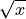

Functions#
This page details Python functions we will frequently need to use.
The arguments of functions are specified between angular brackets <>, with the name of the argument on the left hand side and the type of argument on the right hand side. For example, the definition,
my_function(<this_argument : required>, <that_argument : optional>)
Says the function my_function has a required argument named this_argument and an optional argument named that_argument.
Built-In Functions#
Length Function#
len(<list : required>)The length function is used to find how many elements are in a list.
data = [ 1, 2, 3, 4, 5 ]
n = len(data)
print(n)
Output:
5
Sum Function#
sum(<list : required>)The sum function totals all the elements in a list.
data = [ 2, 2, 2, 2 ]
total = sum(data)
print(total)
Output:
8
Note
The sum function is only defined if the list contains numerical data.
Max Function#
max(<list : required>)The max function finds the largest element in a list.
data = [ 1, 10, 6, 89 ]
m = max(data)
print(m)
Output:
89
Min Function#
min(<list : required>)The min function returns the smallest element in a list.
data = [ 10, 95, 0, -5, 16 ]
m = min(data)
print(m)
Output:
-5
Range Function#
range(<start : optional>, <stop : required>, <step : optional>)The range function generates an iterable sequence of numbers.
Note only the stop argument is required. If only one argument is passed to the range function, then it is assumed to represent the stop argument.
The range function is typically used with Comprehension to generate large lists of data quickly. For example, the following code snippet will create and print the list [0, 1, 2, 3, 4, 5, 6, 7, 8, 9],
data = [ i for i in range(10) ]
Notice the output does not include the endpoint 10. The range function is exclusive with respect to the stop endpoint. This is so we can use the length function and get a result that makes sense,
data = [ i for i in range(10) ]
n = length(data)
print(data)
print(n)
Output:
[0, 1, 2, 3, 4, 5, 6, 7, 8, 9]
10
Important
Notice the list in the output doesn’t include 10.
In other words, the range function excludes the endpoint so the length of the returned list will equal whatever number was originally passed into the range function.
You can use the start and step arguments to generate arbitrary lists of data according to a rule. The following command will iterate through the numbers 2 to 19 in steps of 2.
data = [ i for i range(2, 20, 2) ]
print(data)
Output:
[2, 4, 6, 8, 10, 12, 14, 16, 18]
Enumerate Function#
enumerate(<list : required>)The enumerate function allows you to index the elements in a list.
Suppose you had a sample of closing stock prices observed over one business week,
stock_prices = [ 101.5, 100, 105.25, 107.10, 104.56 ]
If you wanted to plot this as a Time Series to get a sense for any trends in the price, you would order the observations by day and plot the stock prices against the order in which they occured.
We already have the y-axis of the time series; we need to generate the x-axis. An easy way to do this is to enumerate() the list,
order = [ index for index, price in enumerate(stock_prices) ]
pairs = [ (index, price) for index, price in enumerate(stock_prices) ]
print("order: ", order)
print("pairs: ", pairs)
Output:
[0, 1, 2, 3, 4]
[(0, 101.5), (1, 100), (2, 105.25), (3, 107.1), (4, 104.56)]
enumerate() pulls the index of the observation from the list and allows you to use it in the <expr> of Comprehension. This is especially useful for time series data, as this example illustrates.
Zip Function#
zip(<list_one: required>, <list_two: required>)The zip function allows you to iterate over two lists simultaneously.
Suppose you had two lists of equal length,
list_one = [ 1, 2, 3 ]
list_two = [ 4, 5, 6 ]
Using the zip() function, you can step over both lists at the same time and perform operations on elements that correspond to the same index. For example, the following code will take corresponding elements of the two lists defined above and sum them together,
zipped_list = [ one + two for (one, two) in zip(list_one, list_two) ]
print(zipped_list)
Output:
[5, 7, 9]
To break it down step by step, the zip() function returns an ordered pair (one, two) three times. The first time, the ordered pair is (1, 4), where the 1 is pulled from list_one and the 4 is pulled from list_two; the expression in the list generator then sums the elements of each list. The second time, zip() returns (2, 5)`. The third time, the ``zip() function returns (3, 6).
Note, the order of the elements in the ordered pair returned by zip() corresponds to the order in which the lists were passed into the function.
Note
The zip() function will be useful when we get to bivariate data.
Standard Library Functions#
In addition to the functions accessible by default in Python, there are also a large number of functions you can import to extend the basic functionality of Python. These functions reside in the Standard Library.
The syntax for importing an additional package is simply,
import <package-name>
Important
The angular brackets <> are not part of the code. They represent the grammatical rules for importing.
When you import a package, it becomes available in that package’s namespace. For example, if you import math,
import math
The functions inside of the math package are now available to be used through dot notation. The syntax for accessing a math function is given below,
math.<function-name>
Important
The angular brackets <> are not part of the code. They represent the grammatical rules for accessing a function through dot notation.
As an example,
import math
print(math.sqrt(36))
Ouput:
6
We will be using two packages in particular from the Standard Library over and over again in this class, math and random.
Math#
The math has all sorts of goodies in it. Unfortunately, we won’t need most of them. The ones we will need are detailed below.
Square Root#
sqrt(< value : required>)The square root function calculates the square root of a number.
Mathematically, the argument to this function is the  in the following algebraic expression,
in the following algebraic expression,

import math
root = math.sqrt(36)
print("the square root of 36 is : ", root)
Output:
the square root of 36 is : 6
Natural Base e#
exp(<exponent : required>)The e function raises the number e to the given exponent.
The argument to this function is the in the following expression,

import math
e = math.exp(1)
e_squared = math.exp(2)
print("the value of e is: ", e)
print("the value of e squared is: ", e_squared)
Output:
the value of e is: 2.718281828459045
the value of e squared is: 7.38905609893065
Ceil#
ceil(<value : required>)The ceiling function always rounds a number up to the next integer (whole-number)
Important
The celing function will always round up, even in cases like 2.3, where ordinarily we would round down.
import math
ceiling_test_1 = math.ceil(4.8)
ceiling_test_2 = math.ceil(32.1)
print("ceil(4.8) = ", ceiling_test_1)
print("ceil(32.1) = ", ceiling_test_2)
Output:
ceil(4.8) = 5
ceil(32.1) = 33
Floor#
floor(<value : required>)The floor function always rounds a number down to the previous integer (whole-number)
Important
The floor function always rounds down, even in cases like 2.7, where ordinarily we would round up.
import math
floor_test_1 = math.floor(4.8)
floor_test_2 = math.floor(32.1)
print("floor(4.8) = ", floor_test_1)
print("floor(32.1) = ", floor_test_2)
Output:
floor(4.8) = 4
floor(32.1) = 32
Random#
The random package is very appropriately named. It is used to generate random data of all types. Let’s take a look.
Note
The numbers returned by random are not actually random. They are generated with a complex cryptographic algorithm whose details are well beyond the scope of this course. Suffice to say, how random numbers are generated by computer programs is an active area of research with lots of investment dollars being poured into it.
Truly random numbers are a valuable commodity; they are used by investment banks to simulate financial outcomes, they are used by companies to train machine learning algorithms, they are used by militaries to conduct war-games, etc.
The numbers that are returned by random are what are called pseudo-random numbers. Pseudo-random numbers approximate the properties we would expect random numbers to have, but if you look too closely you might start to notice they are not truly random. So don’t look too closely; For the purposes of this class, we may assume anything returned by the random package is actually random.
Important
Due to the nature of the random package, if you are following along on your ChromeBook, you will get different output than the examples.
Random Function#
random()The random function returns a random number between 0 and 1.
The simplest function in the random package is the random(). The random() has no arguments; it will always return a number between 0 and 1, excluding the endpoints. The following code illustrates its use,
import random
x = random.random()
print("this is a random number between 0 and 1: ", x)
Output:
this is a random number between 0 and 1: 0.7886516803637625
Warning
Be careful to distinguish the random package from the random() function. The random package is a namespace for naming functions. The random() function is an operation that produce output.
Random Integer Function#
randint(<start: required, stop : required>)randintreturns a random integer between<start>and<stop>, including both endpoints.
The Random Function will suffice for most purposes. Occassionally, we will need integer-valued random numbers instead of real-valued random numbers. To that end, we will need to use the randint() function.
The following code illustrates its use,
import random
x = random.randint(1,5)
print("this is a random integer between 1 and 5, including 1 and 5: ", x)
Output:
this is a random integer between 1 and 5, including 1 and 5: 2
Random Choice Function#
choice(<list : required>)The choice function returns a random selection for a list.
Another function we will need from the random package is the choice() function. The previous two functions we looked were for generating quantitative data. The choice() function, on the other hand, will generate categorical data.
The following code illustrates its use,
import random
options = [ "Augustus", "Tiberius", "Hadrian" ]
x = random.choice(options)
print("this is a random choice from the list ", options, " : ", x)
Output:
this is a random choice from the list [‘Augustus’, ‘Tiberius’, ‘Hadrian’]: Tiberius
Shuffle#
shuffle(<list : required>)The shuffle functions randomly orders a list into a new list.
The shuffle() function is the equivalent of shuffling a deck of cards, if the deck of cards were a list.
The following code illustrates it use,
import random
data = [ "a", "b", "c", "d" ]
random.shuffle(data)
print(data)
Output
[‘c’, ‘b’, ‘d’, ‘a’]
Normal Variate#
normalvariate(<mean : required>, <standard deviation : required>)The normal variate functions simulates a random draw from the Normal Distribution.
Note
We will not need this function until Unit 3 or 4.
This function is extremely important in this class. It will return a random draw from a normally distributed population. We can use it to simulate all sorts of outcomes and samples. By solving the Z Score for the individual ,

We are able to simulate draws from arbitary normally distributed populations.
Statistics#
Python also has a dedicated package specifically for statistical functions, named statistics.
Mean#
mean(<list: required>)Calculates the sample mean of a univariate dataset passed in through
list.
import statistics as stat
data = [105, 129, 87, 86, 111, 111, 89, 81, 108, 92, 110,
100, 75, 105, 103, 109, 76, 119, 99, 91, 103, 129,
106, 101, 84, 111, 74, 87, 86, 103, 103, 106, 86,
111, 75, 87, 102, 121, 111, 88, 89, 101, 106, 95,
103, 107, 101, 81, 109, 104]
xbar = stat.mean(data)
print(xbar)
Output:
99.12
Median#
median(<list : required>)Calculates the sample median of a univariate dataset passed in through
list.
import statistics as stat
data = [105, 129, 87, 86, 111, 111, 89, 81, 108, 92, 110,
100, 75, 105, 103, 109, 76, 119, 99, 91, 103, 129,
106, 101, 84, 111, 74, 87, 86, 103, 103, 106, 86,
111, 75, 87, 102, 121, 111, 88, 89, 101, 106, 95,
103, 107, 101, 81, 109, 104]
m = stat.median(data)
print(m)
Output:
102.5
Standard Deviation#
stdev(<list : required>)Calculates the sample standard deviation of a univariate dataset passed in through
list.
import statistics as stat
data = [105, 129, 87, 86, 111, 111, 89, 81, 108, 92, 110,
100, 75, 105, 103, 109, 76, 119, 99, 91, 103, 129,
106, 101, 84, 111, 74, 87, 86, 103, 103, 106, 86,
111, 75, 87, 102, 121, 111, 88, 89, 101, 106, 95,
103, 107, 101, 81, 109, 104]
s = stat.stdev(data)
print(s)
Output:
13.388450703681062
Quantiles#
quantiles(<list : required>, <n: required>)Divides the sample of data contained in
listinto a number of equally distributed groups determined bygroupings.
A percentile is defined technically as the division of the sample into one hundred equally distributed groups of individuals. Quartiles, similarily, are defined technically as the division of the sample into four equally distributed groups of individuals.
A quantile is a generalization of this idea. A quantile divides the sample into n equally distributed groups of individuals.
Warning
n here is the number of groupings, not the number of observations.
In terms of quantiles, percentiles are a special case of quantiles when n = 100. Quartiles are a special case of quantiles when n = 4. The following code snippet shows how to use quantiles() to calculate the quartiles of a distribution.
import statistics as stat
data = [105, 129, 87, 86, 111, 111, 89, 81, 108, 92, 110,
100, 75, 105, 103, 109, 76, 119, 99, 91, 103, 129,
106, 101, 84, 111, 74, 87, 86, 103, 103, 106, 86,
111, 75, 87, 102, 121, 111, 88, 89, 101, 106, 95,
103, 107, 101, 81, 109, 104]
# set n = 4 to calculate quartiles
quartiles = stat.quantiles(data, n=4)
print(quartiles)
Output:
[87.0, 102.5, 108.25]
Important
The quantile() function use interpolation! In other words, the output may not correspond to observable values of the sample!
Normal Distribution#
Python provides a way of calculating normal probabilities and percentiles, but it is a bit different from the other functions we have encountered so far. Python represents a normal distribution with an object. An object is a type of Python variable. The variables we have dealt with heretofore have been literal variables, meaning they are simply bits of raw data. An object is a different type of variable; an object has properties that can be accessed and functions that can be called.
An example will make this clearer.
First, we need to create a normal distribution with a certain mean and std_dev (standard deviation). These are properties of the normal distribution object,
import statistics
mean = 100
std_dev = 10
dist = statistics.NormalDist(mean, std)
Notice the mean and std_dev are passed into the NormalDist() and the result is stored in dist. dist is a variable, but it is not a simple one like a float or a string. dist is a normal distribution object.
Once the distribution is created, we can ask it questions.
The two most important questions we will ask this distribution in this class are:
Note
In computer science, when an object is created, we say the object is instantiated.
What is the probability of event X occuring?
What event X corresponds to a given probability?
These questions are answered by, respectively, the cumulative distribution function and the inverse cumulative distribution function.
Cumulative Distribution Function
Recall the cumulative distribution function (CDF) of a sample of data tells you how much of a distribution is less than or equal to a certain value. Symbolically,

You can access the CDF of the normal distribution stored in dist using the cdf() function. Pass into the cdf() function the value whose percentage (probability) you would like to calculate ( in above line). The following code snippet shows how to use the normal distribution created in the previous section to calculate cumulative percentages (probabilities),
in above line). The following code snippet shows how to use the normal distribution created in the previous section to calculate cumulative percentages (probabilities),
prob = dist.cdf(120)
rounded_prob = round(prob, 2)
print("Prob(X <= 120) = ", rounded_prob)
Output:
Prob(X <= 120) = 0.98
Inverse Cumulative Distribution Function
Every one-to-one function has an inverse; the cumulative distribution function is no different. The inverse CDF reverses the operation performed by the CDF.
In other words, if the CDF can be summarized through the following operation,

Then the inverse CDF operates in the reverse direction. Given a percentage, the inverse CDF tells you what observation in the sample corresponds to that percentage,

The following code snippet shows how to call the inverse cumulative distribution function on the normal distribution created in the previous sections.
third_quartile = dist.inv_cdf(0.75)
rounded_quartile = round(third_quartile,2)
print("P(X <= ", rounded_quartile , ") = 0.75")
Output:
P(X <= 106.74) = 0.75
Correlation#
correlation(<x_list: required>, <y_list: required>)The correlation functions returns the sample correlation coefficient for a sample of bivariate data.
TODO
Linear Regression#
linear_regression(<x_list: required>, <y_list: required>)The linear regression function returns the regression model parameters for a sample of bivariate data.
Note
We do not need these functions until Section 3.1 - 3.3.
TODO
Creating Functions#
Occassionally, the Standard Library will not be enough to do what we need to do. In those cases, we have no other options but to define our own function.
Function Signatures#
A function in Python has four components its def, its name, its arguments and its return value. The following list breaks each of these components down,
defis a keyword that informs Python you are about to define a function. You must always precede a function withdef.The function name is how you will access the function. You have already encountered several function names with
range()andsum().The arguments are the input that is passed into the function. Arguments are variables.
The
returnvalue is data the function outputs.
Function Example#
Putting all four of these pieces together, let’s create a simple function.
def fancy(word):
sentence = word + " is fancy!"
return sentence
Take note of the indentation. Python is very particular about indentation because that is how it groups functions together. A function definition must be indented once (with TAB). All lines within the function must be the same indentation level. If you do not follow this requirement, you will get errors. Errors are bad. So, always pay your indentation.
We can call this function after defining it by addressing it by its name (i.e., typing its name) and passing in an argument. Create a new IDLE Notebook, copy in the following function and try executing it with F5,
def fancy(word):
sentence = "fancy " + word + "!"
return sentence
fancified_taco = fancy("taco")
print(fancified_taco)
Output:
fancy taco!